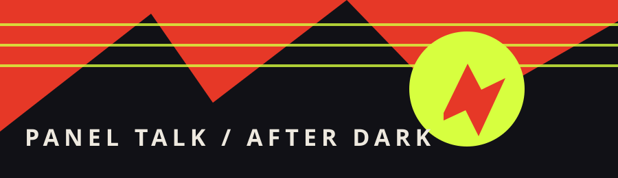

COMMUNITY / THE BACKROOM
Talk between
the panels.

Readers, listeners, late-night theorists.
Bring your best theories, favorite panels, and spoiler-tagged reactions. The widget is intentionally placed in a side panel so it never blocks the reading flow.
View Discord servers →DISCORD SIGNAL